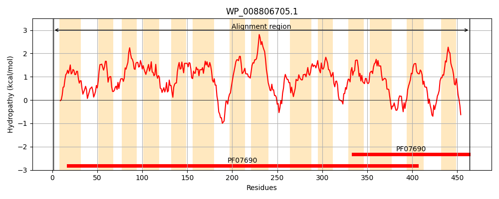
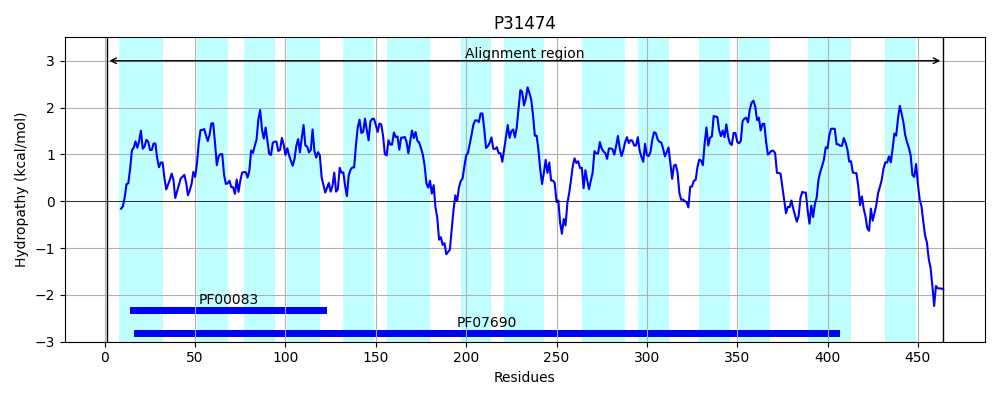
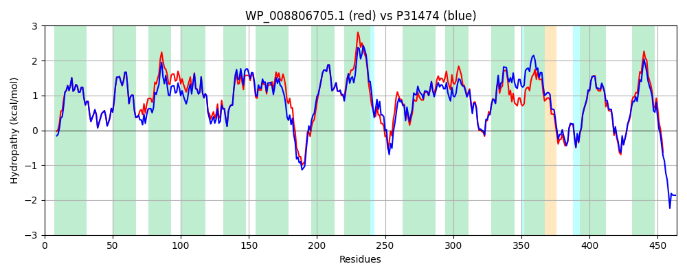

Hit Accession: P31474
Hit TCID: 2.A.1.3.51
Hit Description: gnl|BL_ORD_ID|9773 gnl|TC-DB|P31474|2.A.1.3.51 Probable transport protein hsrA OS=Escherichia coli (strain K12) GN=hsrA PE=1 SV=1
Mach Len: 464
e:0.000000
Query TMS Count : 14
Hit TMS Count: 14
TMS-Overlap Score: 13.800000
Predicted Substrates:None
BLAST Alignment:
Score: 2002 , Bit scores: 775 bits, E-value: 0.0e+00, Alignment length: 464, Percentage identity: 84
Query: 1 MSRKKGRSMAGLPWIAAMAFFMQALDATILNTALPAIAHSLNRSPLAMQSAIISYTLTVAMLIPVSGWLADRFGTRRVFIIAVSLFTLGSLACALSSSLMELVIFRVIQGIGGAMMMPVARLALLRAYPRSELLPVLNFVTMPGLVGPILGPVLGGVFVTWASWHWIFLINIPIGVIGILYARKFMPNFTTPRRRFDITGFLLFGLSLVLFSSGIELFGEKIVATWLALAVIAVSLLLLVAYVRHARRHPAPLISLSLFKTHTFSVGIAGNLATRLGTGCVPFLMPLMLQVGFGYPAIIAGCMIAPTAIGSIIAKSTVTQVLRWFGYRKTLVGITVFIGLMIAQFSLQSPEMPLWMLLLPLFVLGMAMSTQFTSMNTITLADLTDDNASSGNSLLAVTQQLSISLGVAISAAVLRFYEGFDNASTVQQFHYTFITMGVITIVSALMFMLLRAKDGRNLISERHK 464
MS KK RSMAGLPWIAAMAFFMQALDATILNTALPAIAHSLNRSPLAMQSAIISYTLTVAMLIPVSGWLADRFGTRR+F +AVSLFTLGSLACALS+SL +LV+FRVIQGIGGAMMMPVARLALLRAYPR+ELLPVLNFV MPGLVGPILGPVLGGV VTWA+WHWIFLINIPIG+ G+LYARK MPNFTT RRRFDITGFLLFGLSLVLFSSGIELFGEKIVA+W+AL VI S+ LL+ Y+ HARR P PLISL LFKT TFS+GI GN+ATRLGTGCVPFLMPLMLQVGFGY A IAGCM+APTA+GSIIAKS VTQVLR GYR TLVGITV IGLMIAQFSLQSP M +WML+LPLF+LGMAMSTQFT+MNTITLADLTDDNASSGNS+LAVTQQLSISLGVA+SAAVLR YEG + +TV+QFHYTFITMG+IT+ SA MFMLL+ DG NLI + K
Sbjct: 1 MSDKKKRSMAGLPWIAAMAFFMQALDATILNTALPAIAHSLNRSPLAMQSAIISYTLTVAMLIPVSGWLADRFGTRRIFTLAVSLFTLGSLACALSNSLPQLVVFRVIQGIGGAMMMPVARLALLRAYPRNELLPVLNFVAMPGLVGPILGPVLGGVLVTWATWHWIFLINIPIGIAGLLYARKHMPNFTTARRRFDITGFLLFGLSLVLFSSGIELFGEKIVASWIALTVIVTSIGLLLLYILHARRTPNPLISLDLFKTRTFSIGIVGNIATRLGTGCVPFLMPLMLQVGFGYQAFIAGCMMAPTALGSIIAKSMVTQVLRRLGYRHTLVGITVIIGLMIAQFSLQSPAMAIWMLILPLFILGMAMSTQFTAMNTITLADLTDDNASSGNSVLAVTQQLSISLGVAVSAAVLRVYEGMEGTTTVEQFHYTFITMGIITVASAAMFMLLKTTDGNNLIKRQRK 464 | Protein Hydropathy Plots: |
|---|
|  |  |
Pairwise Alignment-Hydropathy Plot:
|
|---|
|  |